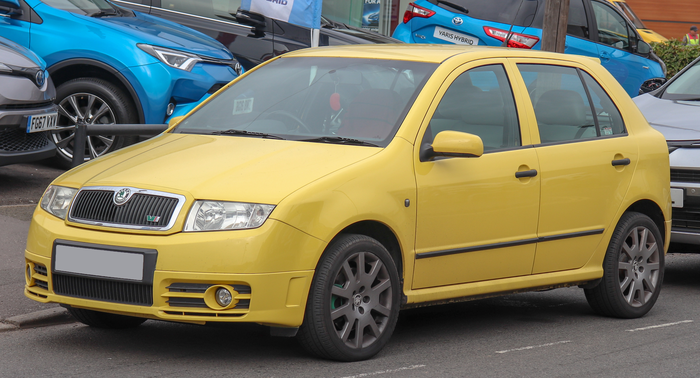

Historia Fabi
Škoda Fabia I została po raz pierwszy oficjalnie zaprezentowana podczas targów motoryzacyjnych we Frankfurcie w 1999 roku. Samochód został zbudowany na bazie płyty podłogowej VW A04, która wykorzystana została m.in. do zbudowania Volkswagena Polo oraz Seata Córdoba i Ibiza. Zastąpił on przestarzały model Felicia. Początkowo pojazd oferowany był wyłącznie w wersji hatchback do której w 2000 roku dołączyła wersja kombi, a rok później sedan. W 2003 roku wprowadzono na rynek sportową odmianę RS. W 2004 roku auto przeszło face lifting. Modyfikacjom poddany został m.in. przedni zderzak, atrapa chłodnicy oraz klosze tylnych lamp. Przy okazji wprowadzone zostały nowe wzory alufelg. W Kenii oraz Ugandzie auto sprzedawane było jako Octavia.
Źródło wikipedia
